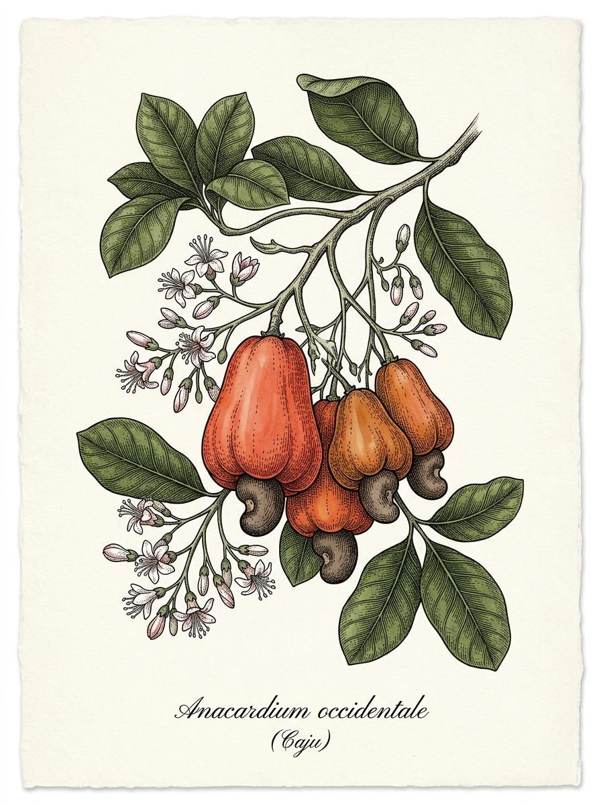

Susane Sales
&
Adilson Ferreira
com a bênção de Deus,
"Deus mudou o teu caminho até se juntar ao meu, e guardou a tua vida,
separando-a para mim. Para onde fores, irei; onde quer que pousares,
ali pousarei. O teu povo será o meu povo, o teu Deus será o meu Deus."
Casamento · 2026
convidam para a cerimônia de celebração
do seu casamento, a realizar-se no
Data & Horário
Sábado
10 de outubro
2026
às 11 horas
Cerimônia
Igreja Matriz Nossa Senhora
da Conceição
Praça Matriz, Centro
Conceição da Feira — BA
✦ Identidade do casamento ✦
“ Como o caju no verão,
nosso amor amadureceu
no tempo certo ”
o caju é um símbolo de
fertilidade, cura e prosperidade.
Após a cerimônia, os noivos receberão
os convidados na
Recepção
Chácara das Margaridas
Rodovia BA-502, nº 82
São Gonçalo dos Campos — BA
Próximo ao Clube Águas Claras
Placas indicativas no caminho
Sua presença é muito importante
Confirme sua presença até
30 de setembro de 2026
Você será redirecionado para o seu aplicativo de e-mail